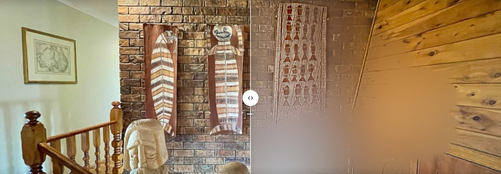

From their own visual field test and audiogram. Then plan together what to change at home and how to talk with each other.

Public images of glaucoma show a black tunnel. When 50 patients compared pictures with their own sight, none chose it (Crabb 2013). Hearing loss, the largest modifiable dementia risk factor, is invisible, and families become someone’s ears and eyes with no guidance.
Simulations alone can make people rate disabled people as less capable (Silverman 2015). Every screen pairs the simulation with what still works and how people adapt, uses real patients’ words, and the person co-owns the plan.
The camera through their field: Peli’s band-limited contrast model on the GPU, thresholds raised by 10−TD/10 from their total deviation. Years slider, dim light and glare.
Their audiogram drives the Cambridge MSBG simulator; Whisper, behind a noise floor at the human hearing threshold, reports what they likely heard. Claude rewordings are kept only if they score better.
On-device depth finds step edges and compares their contrast with what their vision needs there. Seating by better ear and clear field. One editable page for the family.
Clarity Prediction Challenge 2 evaluation set: 897 sentences, 15 listeners with hearing loss, predicting the share of words each person repeated correctly.
| Method | RMSE | Correlation |
|---|---|---|
| Our proxy listener (calibrated) | {{OURS_RMSE}} | {{OURS_R}} |
| Deployed configuration (Whisper base.en) | {{BASE_RMSE}} | {{BASE_R}} |
| HASPI, standard intelligibility index (calibrated) | {{HASPI_RMSE}} | {{HASPI_R}} |
| Best published system (trained on CPC2 data) | 25.1 | 0.78 |
Honest limits. The vision view is exact only while looking at the fixation cross; the 24-2 test covers the central 24–30°. The hearing model is validated on CPC2 listeners, not on the profiled person. Dim light and glare are approximations. Not a diagnostic tool. Next: webcam follow-my-eyes view, an in-app digits-in-noise hearing test, printout photos, and sessions with older adults, an optometrist, an audiologist and an OT.
Data: UWHVF (BSD-3) · NHANES 2017–18 audiometry · CPC2 (CC BY-SA 4.0) · quotes from Glen & Crabb 2015 (CC BY 4.0). Code: pyClarity MSBG, faster-whisper, Kokoro, Depth Anything V2 Small, Next.js, Vercel.